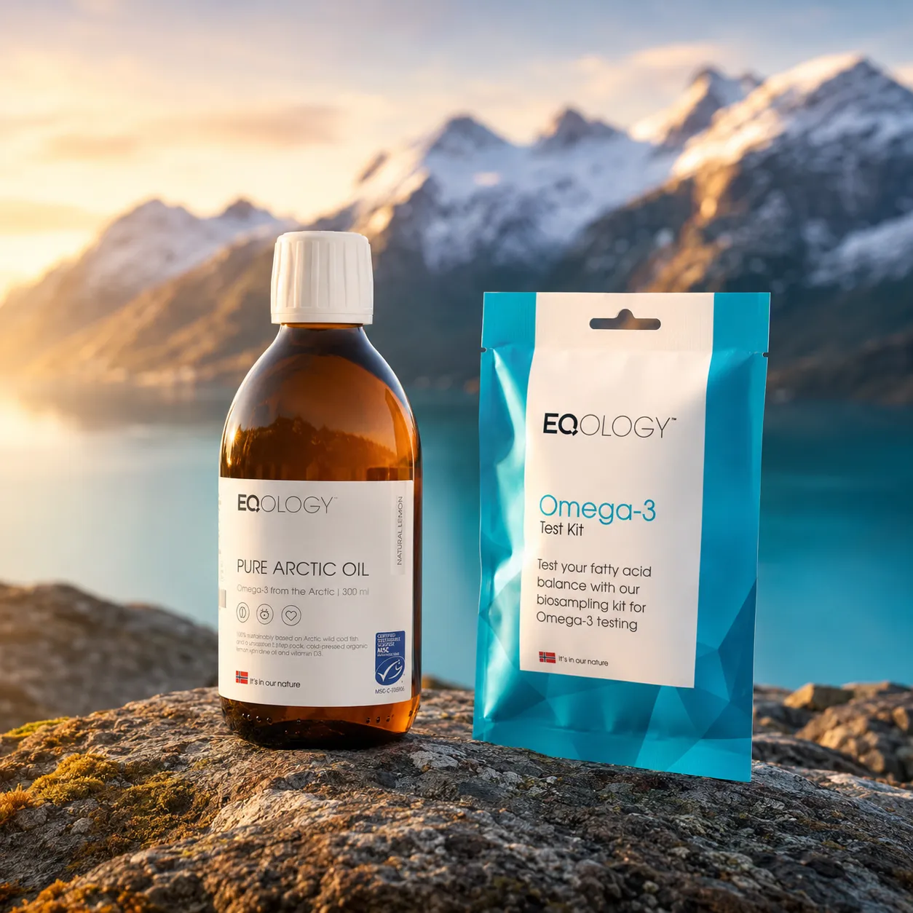

<!DOCTYPE html>
<html lang="fr">
<head>
<meta charset="UTF-8">
<title>Visuels Meta · praticiens</title>
<!-- Gabarit des pubs « praticiens » : pros.html?c=cures|test|cabinet&f=carre|story, rendu en PNG par Playwright (1080×1350 ou 1080×1920) -->
<style>
@font-face { font-family: 'Albert Sans'; src: url('../assets/fonts/albertsans.woff2') format('woff2'); font-weight: 100 900; }
@font-face { font-family: 'IBM Plex Mono'; src: url('../assets/fonts/ibmplexmono-400.woff2') format('woff2'); font-weight: 400; }
* { box-sizing: border-box; margin: 0; padding: 0; }
body { width: 1080px; height: 1350px; overflow: hidden; font-family: 'Albert Sans', sans-serif; font-weight: 300; letter-spacing: -0.02em; }
body.story { height: 1920px; }
#racine { height: 100%; }
.page { position: relative; width: 100%; height: 100%; padding: 72px; display: flex; flex-direction: column; overflow: hidden; }
.story .page { padding: 150px 80px 300px; }
.page > * { position: relative; }
.nuit { background: #0B1D2E; color: #fff; }
.nuit::before { content: ''; position: absolute; inset: 0; background: radial-gradient(55% 45% at 92% 6%, rgba(77,168,181,.35), transparent 70%), radial-gradient(50% 40% at 0% 100%, rgba(77,168,181,.16), transparent 70%); }
.sable { background: #F5F4F0; color: #0B1D2E; }
.oeil { display: inline-flex; align-items: center; gap: 14px; align-self: flex-start; font-size: 28px; font-weight: 400; padding: 10px 20px; border-radius: 10px; }
.oeil::before { content: ''; width: 12px; height: 12px; transform: rotate(45deg); }
.nuit .oeil { background: rgba(255,255,255,.94); color: #0B1D2E; } .nuit .oeil::before { background: #0B1D2E; }
.sable .oeil { background: #0B1D2E; color: #fff; } .sable .oeil::before { background: #fff; }
h1 { font-weight: 300; font-size: 104px; line-height: 1; margin-top: 36px; letter-spacing: -0.035em; }
.story h1 { font-size: 118px; }
h1 em { font-style: normal; color: #5BBFCB; }
.sable h1 em { color: #3D8691; }
.sous { font-size: 34px; line-height: 1.3; margin-top: 26px; max-width: 26ch; opacity: .82; }
.photo { flex: 1; margin-top: 40px; border-radius: 28px; overflow: hidden; position: relative; min-height: 0; }
.photo img { position: absolute; inset: 0; width: 100%; height: 100%; object-fit: cover; }
.badge { position: absolute; left: 24px; bottom: 24px; background: #fff; color: #0B1D2E; border-radius: 999px; padding: 14px 26px; font-size: 28px; font-weight: 400; box-shadow: 0 20px 40px -20px rgba(0,0,0,.5); }
.badge b { color: #3D8691; font-weight: 500; }
ul { list-style: none; display: grid; gap: 16px; margin-top: 36px; font-size: 32px; }
li { display: flex; align-items: center; gap: 20px; }
li::before { content: '✓'; flex-shrink: 0; width: 46px; height: 46px; border-radius: 50%; background: #4DA8B5; color: #0B1D2E; display: grid; place-items: center; font-size: 24px; font-weight: 600; }
.pied { display: flex; align-items: center; justify-content: space-between; margin-top: 40px; padding-top: 30px; border-top: 1px solid rgba(127,140,155,.35); }
.pied img { height: 42px; width: auto; }
.mono { font-family: 'IBM Plex Mono', monospace; font-size: 21px; letter-spacing: 0; opacity: .7; text-transform: uppercase; }
/* Cures : la frise test → cure → test */
.frise { margin-top: 36px; display: grid; grid-template-columns: 1fr 1.25fr 1fr; gap: 14px; }
.etape { border-radius: 22px; padding: 26px 24px; background: rgba(255,255,255,.07); border: 1px solid rgba(255,255,255,.14); position: relative; }
.etape.fort { background: #4DA8B5; color: #0B1D2E; border-color: #4DA8B5; }
.etape .n { font-family: 'IBM Plex Mono', monospace; font-size: 20px; letter-spacing: 0; opacity: .7; text-transform: uppercase; }
.etape b { display: block; font-weight: 400; font-size: 34px; line-height: 1.1; margin-top: 12px; letter-spacing: -0.02em; }
.etape span { display: block; font-size: 23px; line-height: 1.25; margin-top: 8px; opacity: .78; }
.etape:not(:last-child)::after { content: '→'; position: absolute; right: -25px; top: 50%; transform: translateY(-50%); z-index: 1; width: 36px; height: 36px; border-radius: 50%; display: grid; place-items: center; font-size: 22px; background: #0B1D2E; color: #5BBFCB; border: 1px solid rgba(91,191,203,.5); }
.etape.fort::after { color: #5BBFCB; }
.note { font-size: 28px; margin-top: 26px; opacity: .82; }
/* Cabinet : photo pleine page */
.plein { padding: 0; }
.plein .fond { position: absolute; inset: 0; }
.plein .fond img { width: 100%; height: 100%; object-fit: cover; object-position: 50% 22%; }
.plein .fond::after { content: ''; position: absolute; inset: 0; background: linear-gradient(180deg, rgba(11,29,46,0) 18%, rgba(11,29,46,.82) 50%, #0B1D2E 66%); }
.plein .contenu { position: absolute; inset: auto 0 0 0; padding: 72px; color: #fff; }
.story .plein .contenu { padding: 80px 80px 300px; }
.plein .oeil { background: rgba(255,255,255,.94); color: #0B1D2E; } .plein .oeil::before { background: #0B1D2E; }
.plein h1 em { color: #5BBFCB; }
</style>
</head>
<body>
<div id="racine"></div>
<script>
var q = new URLSearchParams(location.search), c = q.get('c') || 'cures', f = q.get('f') || 'carre';
if (f === 'story') document.body.classList.add('story');
var oeil = '<span class="oeil">Praticiens de santé au naturel</span>';
var pied = function (blanc) { return '<div class="pied"><span class="mono">Distributeur indépendant Eqology</span></div>'; };
var P = {
  // 1 · Les cures : le mécanisme que le praticien connaît déjà
  cures: '<div class="page nuit">' + oeil
    + '<h1>Ajoutez le test oméga‑3 <em>à vos cures.</em></h1>'
    + '<div class="photo"></div>'
    + '<div class="frise">'
    +   '<div class="etape"><span class="n">Avant</span><b>Le test</b><span>à domicile, au bout du doigt</span></div>'
    +   '<div class="etape fort"><span class="n">Pendant</span><b>La cure</b><span>huile de Norvège, pêche certifiée MSC</span></div>'
    +   '<div class="etape"><span class="n">Après</span><b>Le second test</b><span>pour voir où il en est</span></div>'
    + '</div>'
    + '<p class="note">Vos patients commandent seuls avec votre lien. Vous touchez une commission sur chaque commande.</p>'
    + pied(true) + '</div>',
  // 2 · Le test : la science d'abord
  test: '<div class="page sable">' + oeil
    + '<h1>Mesurez avant <em>de conseiller.</em></h1>'
    + '<p class="sous">Un test sanguin à domicile donne à vos patients leur équilibre <span style="white-space:nowrap">oméga‑6 / oméga‑3</span> avant la cure.</p>'
    + '<div class="photo"><span class="badge">Kit de bienvenue de <b>99&nbsp;€ remboursé</b></span></div>'
    + '<ul><li>Prélèvement au bout du doigt, chez eux</li><li>Analysé par un laboratoire indépendant</li></ul>'
    + pied(false) + '</div>',
  // 3 · Le cabinet : l'objection « je ne veux pas vendre »
  cabinet: '<div class="page plein"><div class="fond"></div><div class="contenu">' + oeil
    + '<h1>Vous conseillez. <em>Eqology encaisse et livre.</em></h1>'
    + '<ul><li>Aucun stock, aucun paiement au cabinet</li><li>Une commission sur chaque commande</li><li>Kit de bienvenue de 99&nbsp;€ remboursé</li></ul>'
    + pied(true) + '</div></div>'
};
document.getElementById('racine').innerHTML = P[c] || P.cures;
</script>
</body>
</html>
